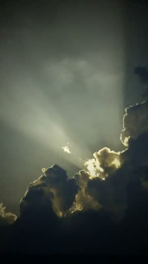
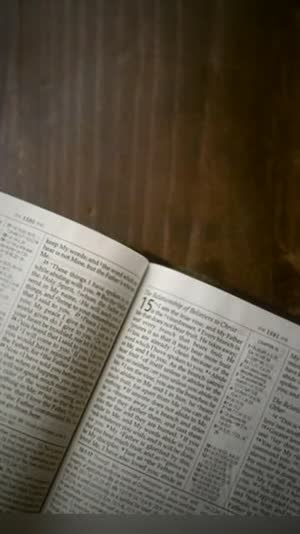

NorForge › Vídeos cristãos
Fé
Vídeos cristãos e para igreja com edição cinematográfica
Selecione as fotos e os vídeos do culto, do ministério ou do seu devocional. O NorForge reconhece que o conteúdo é de fé e monta um vídeo cinematográfico — câmera em movimento, luz dourada, frases bíblicas em cada cena e uma trilha cristã épica.

A IA reconhece conteúdo de fé
Igreja, cruz, mãos em oração, Bíblia aberta, louvor e adoração: quando a maior parte das fotos é desse tema, o AutoCut abre a categoria Fé e escolhe automaticamente uma trilha cristã épica. Tudo isso roda no seu computador, sem enviar suas fotos para a internet.
20 modelos de fé
Quem é Jesus?, Salmo 23, Fé que move, Batalha espiritual, Leão de Judá, Louvor, Oração, Graça, Gratidão, Ele vive, Milagre, Céu aberto, Dia de culto, Testemunho, Promessa, Deus no controle, Tudo novo, Trailer bíblico, Adoração e Guerreiro de oração.



Frases em cada cena
Os modelos de fé escrevem frases curtas de duas linhas, uma por cena, no estilo dos vídeos cristãos que viralizam — por exemplo: “Para o cansado, Jesus é o descanso.”, “O Senhor é o meu pastor, nada me faltará.” ou “A batalha é do Senhor.” Você pode editar todos os textos no editor.
Para ministérios e criadores
- Igrejas: convites para o culto, retrospectivas de eventos, batismos e conferências.
- Criadores cristãos: devocionais, versículos do dia e testemunhos para Reels, Shorts e TikTok.
- Ministérios de louvor: bastidores, ensaios e trechos do culto com legendas automáticas.
Perguntas frequentes
Quais músicas cristãs o NorForge usa?
As músicas cristãs da sua biblioteca — o NorForge prefere as épicas (orquestra, coral, adoração). Você também pode adicionar os seus louvores. Ao publicar, respeite os direitos autorais das músicas nas redes sociais.
Posso trocar as frases?
Sim. Abra o vídeo no editor e altere qualquer texto, a fonte e a posição.
Serve para a igreja inteira usar?
Sim. O NorForge roda num computador Windows e o editor também abre no navegador do celular.